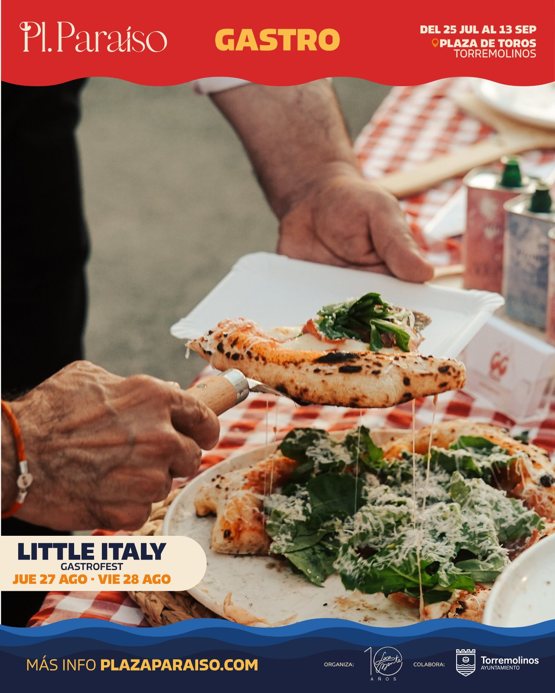

Plaza Paraíso · Programa
Gastronomíaen Plaza Paraíso Torremolinos
Un viaje a italia donde descubrir sus sabores con el mejor ambiente y buen rollo para compartir, descubrir y repetir.

El cartel de Gastronomía
El evento

Explora más
Otros mundos
Plaza de Toros · Torremolinos
No te lo
No te lo
pierdas
Asegura tu sitio para las mejores tardes del verano.
Compra ya tu anticipada.